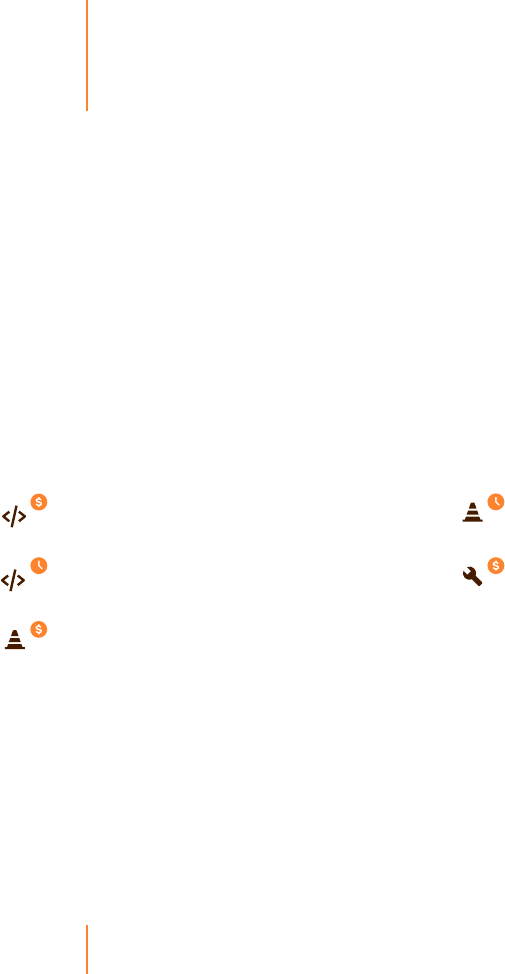

4
Opportunity cost is the loss of potential gain from other alternatives
when one alternative is chosen.
PDF.js has over 6,000 forks and commits typically occur several times a week.
Depending on the extent of your customization, these changes might have an
impact on your project. Some of the customers we’ve worked with have
encountered situations where their customizations break after PDF.js is updated.
The best way to deal with this is to assign a developer to periodically monitor
and test your PDF.js viewer customizations.
Cost of maintaining custom PDF.js project
Can someone please fix this issue in pdf js. This issue has ruined our
experience in an application that is in production. If we don't get a fix
we will have to abandon pdf.js and move to a different product. I don't
want to do that as I find pdf.js really simple in its UI and dependencies.
When assessing whether to undertake a custom pdf.js project, the first thing to
look at is the overall cost. Once you’ve defined how much time will need to be
invested by developer resources, this assessment ends up being a straightforward
calculation:
If the cost of using internal resources is lower than a commercial solution, then it
would seem obvious to develop in-house. But there is one more cost to consider -
the cost of using developer resources to work on something that is not your core
differentiator - a cost known as opportunity cost.
“
“
”
”
Opportunity cost of PDF.js
Custom PDF.js cost assessment:
$45 per hour for developer salary
80 to 160 hours of development time
20 to 40 hours for yearly maintenance
$3,600 to $7,200 to setup viewer
$900 to $1,800 maintenance cost per year